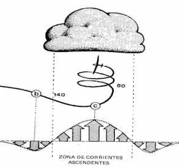

Vuelo a vela
|
Inicio
|
Durante el curso de piloto de planeador Ud. adquirirá los conocimientos básicos necesarios para una operación absolutamente segura de la aeronave, tanto en los procedimientos de despegue y remolque, en el vuelo librado, como en el tráfico y maniobras de aterrizaje. Cuando Ud. termine su curso, ya tendrá la experiencia teórica y práctica para poder volar a vela. Que es el vuelo a vela: A continuación transcribimos un párrafo del libro "Vuelo sin motor - Enseñanza práctica - H. Reichmann", que resume las respuestas este interrogante, El primer vuelo Si usted quisiera tener una primera impresión de lo que es el vuelo a vela, le aconsejamos que, un día cualquiera, se acerque al aeródromo más próximo. Al llegar al aeródromo, ofrézcase para ayudar a los monitores en su trabajo, preguntándoles si existe alguna posibilidad de participar en un vuelo de prueba. Quizá tenga usted que esperar algunas horas antes de que le sea posible subir a bordo de un velero, pero tenga la seguridad de que se trata de una experiencia difícil de olvidar. Después de enganchar el cable de remolque y de haber sido colocados los planos en posición horizontal, sentirá un brusco acelerón. La rueda y el patín vibrarán durante el recorrido hasta que, de pronto, el velero empezará a elevarse decididamente hacia el cielo, mientras produce un ligero silbido. A medida que nos elevamos, el aeródromo, las gentes y todo aquello que estaba a nuestro alrededor va volviéndose más pequeño... y así vamos subiendo hacia otro mundo, al mundo de los vientos y de las nubes. El vuelo va siendo paulatinamente menos empinado, el piloto desengancha el cable del remolque y de nuevo volvemos a ver el suelo. Sorprendentemente, no sentimos vértigo -como sucedería si estuviéramos en una torre- pues la cabina nos da sensación de seguridad y firmeza. Sin embargo, cuando el piloto comienza a virar por primera vez, instintivamente trataremos de contrarrestar la sensación que nos produce la inclinación del horizonte. Por el contrario, si tratamos de adoptar la misma posición que la del avión, como si éste y nosotros fuéramos una misma cosa, inclinándonos como hace el ciclista en las curvas, conseguiremos una sensación de seguridad, belleza y libertad mucho mayor que la que ofrece cualquier medio de transporte terrestre. Disfrutaremos al deslizarnos silenciosamente por encima de la Tierra, en cuya superficie, hasta entonces, estábamos obligados a movernos. Después de realizar algunos virajes y de volar en línea recta, el piloto se prepara para el aterrizaje. El avión toca ligeramente el suelo y comienza a rodar. Únicamente después de bajarnos del avión seremos conscientes de las perspectivas diferentes y de los nuevos horizontes que el vuelo nos ha proporcionado; volviendo de nuevo a sentirnos prisioneros de la Tierra. La duración del vuelo no es lo importante, pues la experiencia es tan intensa que nos queda grabada durante días o semanas, e incluso, para muchos, durante toda la vida." Vuelo en Térmica Al ser el planeador una aeronave sin motor, después de haber obtenido la altura de remolque (Entre 400 y 600 metros), no le queda al piloto otra opción que localizar zonas de aire ascendente y volar dentro de ellas, para de este modo aumentar su altura y luego poder efectuar planeos a su gusto. Estas zonas se denominan "térmicas", y no son otra cosa que lo que popularmente se conoce como "pozos de aire". Extendernos aquí sobre la explicación científica sobre como se producen estas corrientes ascendentes no es el propósito de esta página, pero si se puede asegurar que el encontrar estas corrientes, lograr introducir el planeador dentro de las mismas, y ascender a veces rodeados de pájaros como los caranchos, buitres o cóndores, es una fuente de gran satisfacción, siendo esta una de las tantas facetas del vuelo a vela. A los fines de clarificar estos conceptos se agrega el siguiente gráfico:  |
|
|
|
||